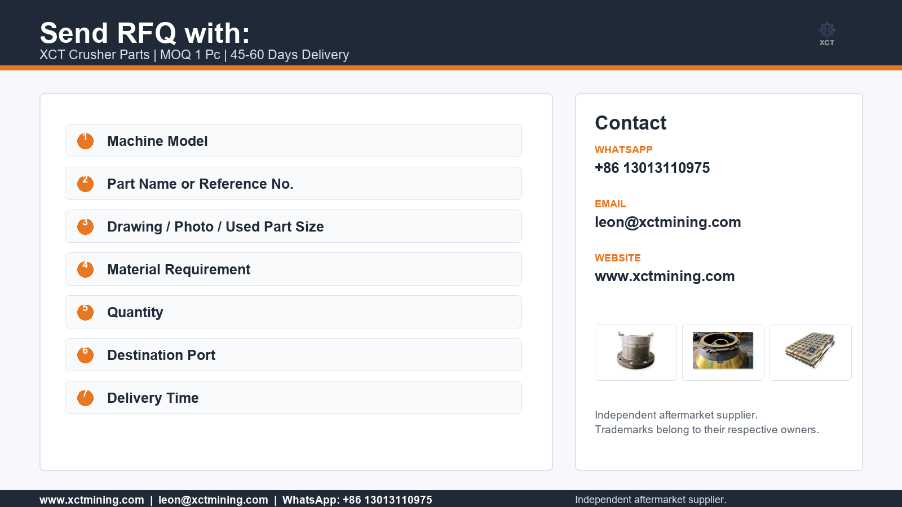

Use the number, but verify the fit
Different revisions can share similar descriptions. XCT reviews numbers together with model, photos and dimensions before confirming a quote.
Quote by number, drawing or photo
If your purchasing record includes a part number, OEM reference number, drawing code or old-part marking, send it to XCT Mining with the machine model and photos for aftermarket replacement part review.
Reference numbers and brand names are used only to identify the replacement application and do not imply authorization or affiliation.

Different revisions can share similar descriptions. XCT reviews numbers together with model, photos and dimensions before confirming a quote.
Clear photos of markings, bolt holes, seating faces, wear pattern and overall shape can help identify mantle, bowl liner, bushing, wedge, nut or counterweight families.
Drawings should include material, heat treatment, tolerances and critical surfaces. XCT can review custom manufacturing from drawings or samples.
If the part number is missing, send the crusher model, part name, dimensions and photos. XCT will advise whether the inquiry can be identified confidently.
Useful for these parts
This page is designed for buyers who search or purchase by part number rather than by product category.